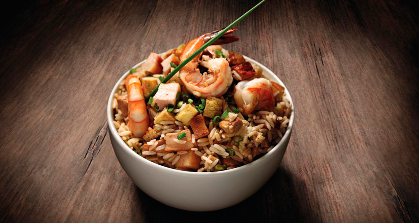

Chaufa

Descripcion
El arroz chaufa es un plato peruano que consiste en arroz frito con verduras y otros ingredientes.
Es un plato de fusión entre la cocina china y la peruana
Ingredientes
- 500 g de carne molida
- 1 cebolla picada
- 2 dientes de ajo
- 400 g de tomate triturado
- 1 cucharadita de sal
- 1/2 cucharadita de pimienta negra
- 200 g de queso rallado
- 300 g de pasta
Pasos
- Calienta una sartén grande a fuego medio y cocina la carne molida hasta que esté dorada.
- Añade la cebolla y el ajo picados, y cocina hasta que estén suaves.
- Agrega el tomate triturado, la sal y la pimienta, y cocina a fuego lento durante 10 minutos.
- Cocina la pasta según las instrucciones del paquete y escúrrela bien.
- Mezcla la salsa con la pasta cocida y transfiérela a una fuente para horno.
- Cubre con queso rallado y hornea a 180 °C durante 15 minutos o hasta que el queso esté dorado.
- Sirve caliente y disfruta.
Home